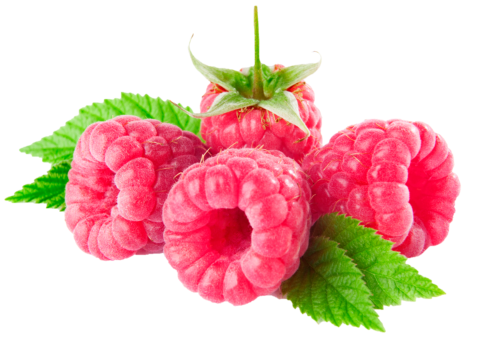

Польза ягод
Ягоды — это один из самых полезных (и вкусных!) продуктов, которые растут прямо под открытым небом. Они богаты витаминами, антиоксидантами и минералами, которые помогают укрепить иммунитет, улучшить зрение и функционирование сердечно-сосудистой системы. Также они защищают организм от преждевременного старения и раковых заболеваний.